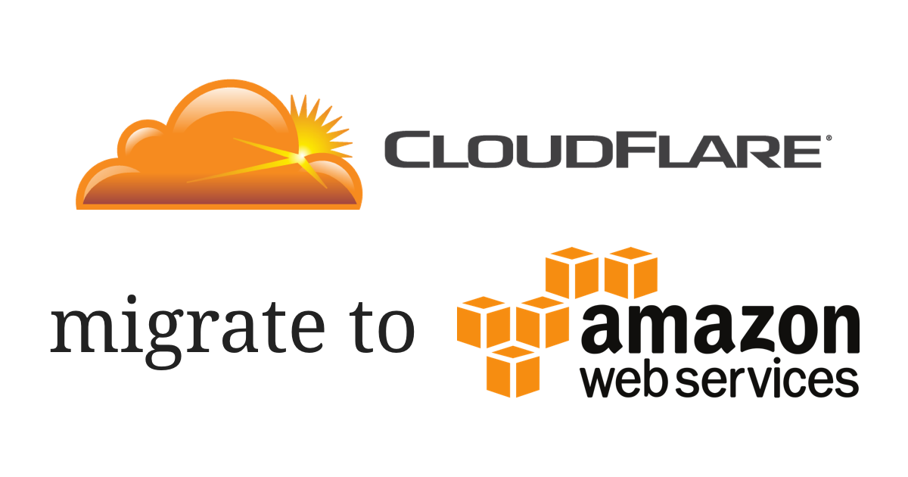

從 Cloudflare 搬家到 AWS，而且是「徹底搬家」

使用了很長一段時間的 Cloudflare，最近在資安上捅出了一個大摟子：Cloudbleed。於是開始研究其他類似 Cloudflare 的服務，第一個想到的就是另外一個我自己也已經使用很久的 Amazon Web Services。
Cloudflare 提供什麼服務？在 AWS 上有哪些替代服務？
| 服務 | Cloudflare | AWS |
|---|---|---|
| DNS | 免費 | 付費，一個 hosted zone 0.5 美金/月[^1] |
| SSL | 免費，Flexible SSL | 免費，Amazon Certificate Manager[^2] 或 Let’s Encrypt |
Amazon Certificate Manager (ACM) 與 Let’s Encrypt 最大的差別在於，ACM 需要附加在 Cloudfront 或 ELB 上，ELB 是 AWS 的負載平衡服務，價格不菲；Cloudfront 則是 AWS 的 CDN 服務，雖然非常便宜，但如果對於網站的流量與速度沒有太大的需求[^3]，直接使用 Let’s Encrypt 即可。
實際使用案例
原來的設定
我自己手上目前有兩個 domain name，一個是個人網域，指向部落格，以下稱 foo.com；一個是之前用來接案的網域，指向客戶的網站，以下稱 bar.com。兩個都從台灣的網域代理商購得，然後按照 Cloudflare 上的說明，將網域代理商的設定改成 自管 DNS，指向 Cloudflare 管理的 DNS，然後啟用 Cloudflare 提供的 Flexible SSL。
部落格網域 foo.com
目前我的部落格是 host 在 GitHub Pages 上，然後 GitHub 又打死不提供 custom domain SSL。所以只能摸摸鼻子，花點小錢使用 Cloudfront，否則就沒有辦法掛 ACM 提供的憑證。礙於篇幅，我推薦直接參考 GitHub Pages Custom Domain with SSL/TLS，我自己就是按照這篇文章設定，作者還很用心地放上了螢幕截圖。
接案用網域 bar.com
接案用的網域與部落格的網域相比簡單許多，但也繁雜許多。
1. 先到 Route53 建立 Hosted zone
Name 欄位在這個例子中是 bar.com。要注意的是，Route53 的 Hosted zone 一旦建立，就會收取 0.5 美金的費用，所以務必謹慎、不要打錯網域名稱。
2. 將 DNS records 一筆一筆地從 Cloudflare 複製、貼上到 Hosted zone 下
A record 就是 A record、CNAME record 就是 CNAME record、TXT record 就是 TXT record，名稱、值都是直接複製貼上。到目前為止我發現唯一不同的是，MX record 在 Cloudflare 上，多個的 priority 會切成多筆紀錄，但到了 Route53 上會合併成一筆。舉例來說如果在 Cloudflare 上，假設 MX record 有兩個 priority，就會有兩筆記錄：
| Name | Type | Record | Priority |
|---|---|---|---|
| mail.bar.com | MX | mxa.mailgun.com | 10 |
| mail.bar.com | MX | mxb.mailgun.com | 20 |
但到了 Route53 上就會合併成一筆：
| Key | Value |
|---|---|
| Name | mail.bar.com |
| Type | MX |
| Records | 10 mxa.mailgun.com 20 mxb.mailgun.com |
最後比照 Cloudflare，也要到網域代理商那邊將 name server 改成 Cloudfront 提供的 name server，格式大概會長下面這個樣子：
1 | ns-XX.awsdns-XX.co.uk. |
其中 XX 都是數字。
3. 確認 DNS 已經生效
由於 Let’s Encrypt 需要認證網域，所以在認證之前請先確定 Route53 已確實生效，domain name 有辦法指向網站主機，例如 EC2 instance 的 IP。
1 | $ nslookup bar.com |
4. 設定 nginx 的 .well-known directive
如果伺服器是 nginx，要先設定 .well-known 路徑，讓 Let’s Encrypt 認證網域。在此之前一定要先確定 DNS 已經生效，而且 IP 可以直接從外網訪問，否則 Let’s Encrypt 會無法連線，修改完設定檔之後記得重新啟動 nginx。
1 | server { |
記得重新啟動 nginx，因為很重要所以再說一次。
5. 從 Let’s Encrypt 取得憑證
Let’s Encrypt 現在只要安裝一個 certbot 的小程式。
幹，變得超方便啊，以前為了 Let’s Encrypt 裝了一堆不知道是三小的垃圾。
然後輸入以下指令：
1 | $ certbot certonly -a webroot --webroot-path 網站根目錄 -d 網域名稱 |
網站根目錄 要改成 server 的網站根目錄 (在 Apache 就是 DocumentRoot 的值、nginx 則是 root 的值)。假設今天網域名稱是 bar.com、網站根目錄是 /usr/share/nginx/html：
1 | $ certbot certonly -a webroot --webroot-path /usr/share/nginx/html -d bar.com |
記得要給 certbot 寫入網站根目錄的權限，如果沒有權限就加上 sudo 試試看。另外，如果網域有 www 的別名，例如 www.bar.com，那也要一併加上去，因為 Let’s Encrypt 不會主動 alias：
1 | $ certbot certonly -a webroot --webroot-path /usr/share/nginx/html -d bar.com -d www.bar.com |
等 certbot 認證完，如果螢幕上出現 Congratulations 的字樣，代表大功告成。如果沒有，快看看是什麼樣的錯誤訊息。
5.1. 404 Not Found
這個錯誤如果按照其他網路上的教學，十之八九都會碰到。我常常看到 nginx 的設定他們只有寫這樣：
1 | server { |
但實際上能動的 nginx 設定卻是這樣：
1 | server { |
注意到多一行 root 嗎？如果沒有那行，/.well-known 就不會對應到任何目錄，Let’s Encrypt 就抓不到認證用的檔案了。
5.2. 找不到 domain name 或 domain name 指向的還是 Cloudflare 的 DNS
- 私有 IP 或公開 IP：IP 位址一定要是可以從外網存取得到的公開 IP，否則 Let’s Encrypt 會沒辦法存取。
- DNS 還沒生效：傳統的 DNS 會需要 24 至 48 小時來更新紀錄，但現在這樣的 DNS 已經很少了。如果還是遇到了趕快換一家吧，否則如果不幸遇到 DNS hijack，根本連防禦的時間都沒有。
6. 為 nginx 加上 HTTPS、設定 HTTP 轉址到 HTTPS
礙於篇幅，在此引用 DigitalOcean 社群的文章 How To Secure Nginx with Let’s Encrypt on Ubuntu 14.04，其中 Step 3 — Configure TLS/SSL on Web Server (Nginx) 就包含了在 nginx 設定 SSL 與設定 HTTP 自動轉址 HTTPS。
[^1]: 與其他 AWS 的服務不同的是，Route53 的 Hosted zone 一旦建立，就會立刻收取 0.5 美金的費用。
[^2]: 憑證一定要在 us-east-1 region (N. Virginia) 申請、核發，否則在 Cloudfront 不會出現選項。
[^3]: 甚至是安全。因為如果沒有掛 CDN 或切割內外網，只要使用 nslookup 等工具就可以直接知道主機的真實 IP。